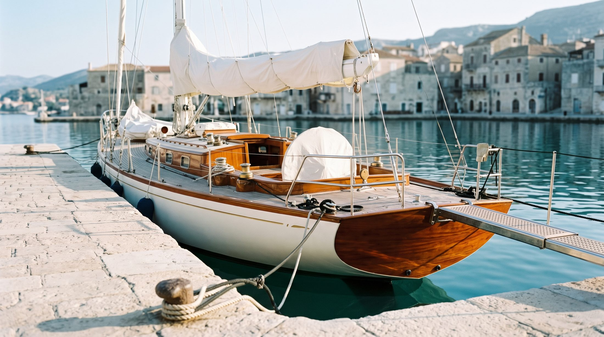
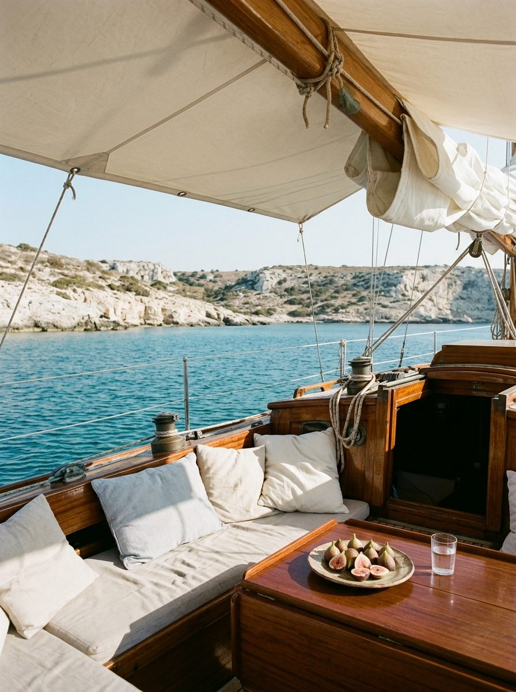
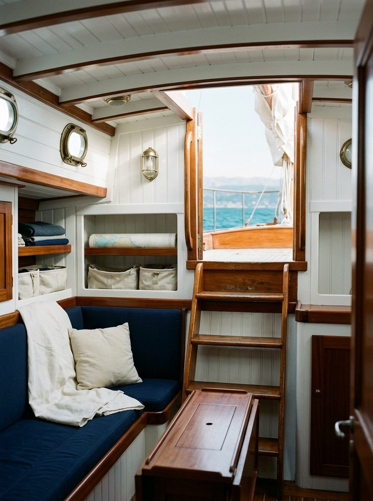
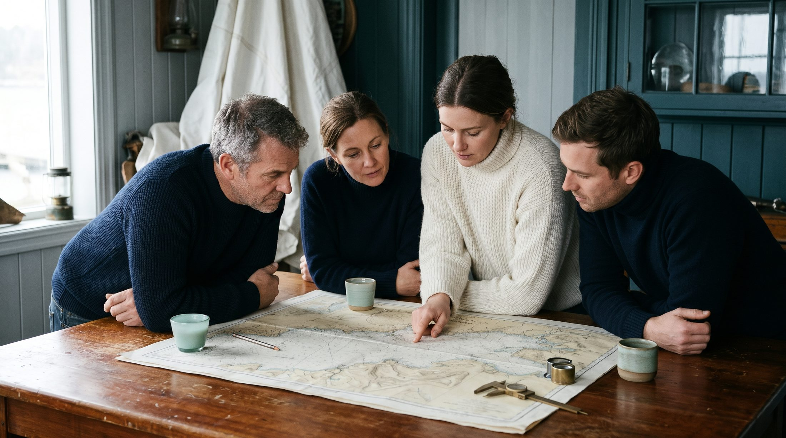

Classic yachts, for you in Palma
Keeping and chartering of classic yachts, for the season and beyond.

A keeper for families, estates and private owners around the bay.
We keep and sail small collections of classic yachts on behalf of families, estates and private owners who want their boats used, loved and accounted for.

The calm of a settled plan, with none of the guesswork.
A quieter alternative to the crowded charter dock and the lonely mooring.
Costs agreed, month by month
Your budget is settled once a year and held. One statement a month, with photographs and hours, and no surprises in spring.
No idle months
Steady ties with sailing schools, families and returning guests keep the yacht moving through the whole season.
A clear share, without hidden fees
Our model covers the running of the yacht from end to end, so income is not worn away by small commissions.
A hull kept sound
Our own crew carries out checks, full inventories and preventive work, in the water and on the hard.
A circle of guests chosen with great care.
A yacht is only as safe as the hands that borrow it. Ours are opened to sailors and families we have met, and would lend our own boats to.
Returning families

Families who come back each summer, for a month at a time, and know where the corkscrew lives.
Schools
& masters

Sail training, yachtmaster passages and small workshops led by skippers we know by name.
Long passages

Crews on sabbatical and owners between boats, sailing under season charters of three months and more.
One house, anchored on two coasts.
Palma & the Balearics
Marstrand & the west coast
Do you own a yacht, a small fleet or an unfinished hull?
Hand us the keys, keep the pleasure
and know the cost in advance.

